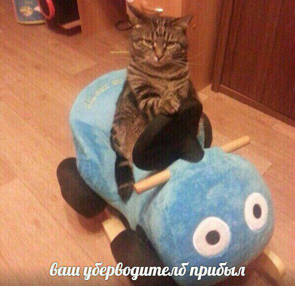

Поздравляем, вы таки добрались до конца и прямо сейчас стоите на краю бездонной пропасти мракобесия и постироничных мемасов. Следующий шаг вперёд вы делаете на свой страх и риск. Никто не несёт ответственности за вашу психику. 
Для начала путешествия нажмите на убер, прибывший за Вами (пикча выше).
Ниже вы можете ознакомиться со списком статей. Для полного погружения рекомендуется читать их по порядку.